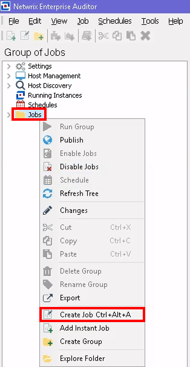
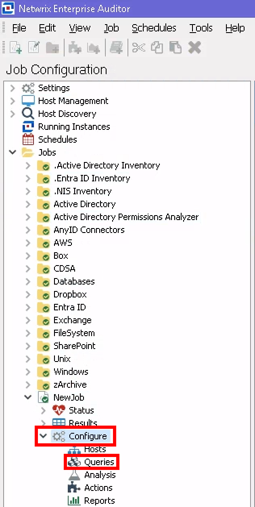
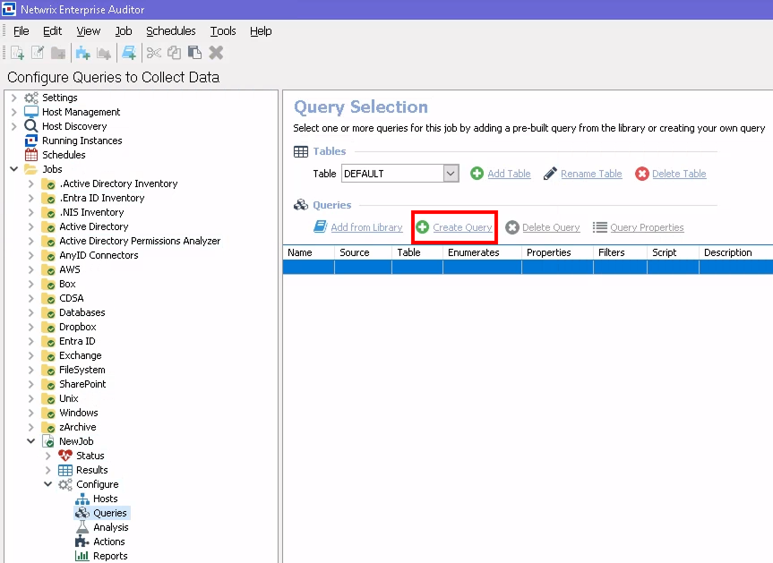
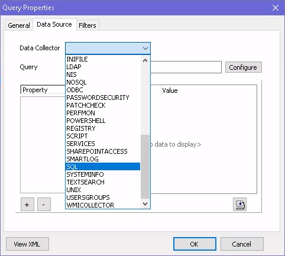
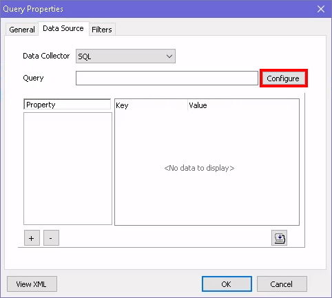
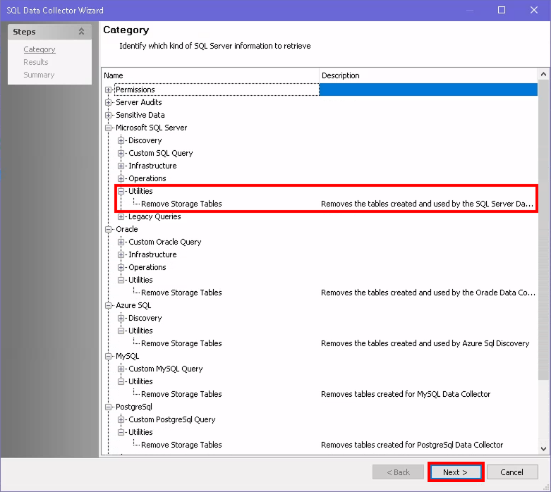
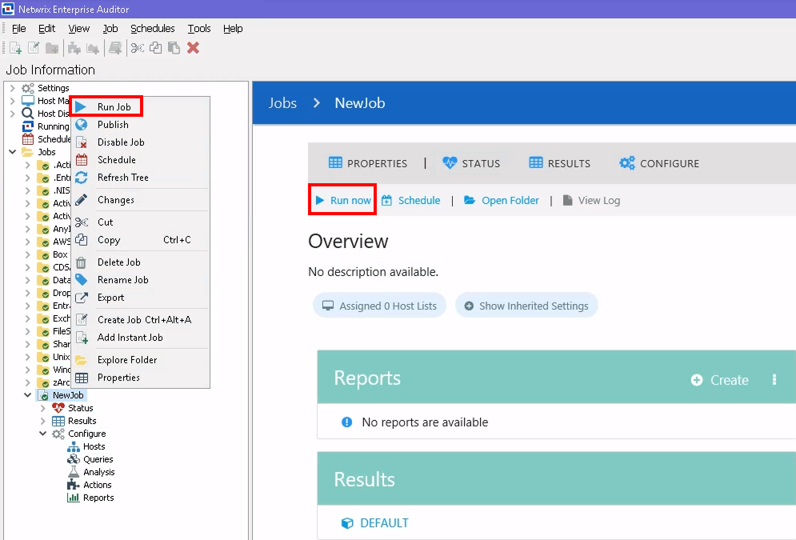
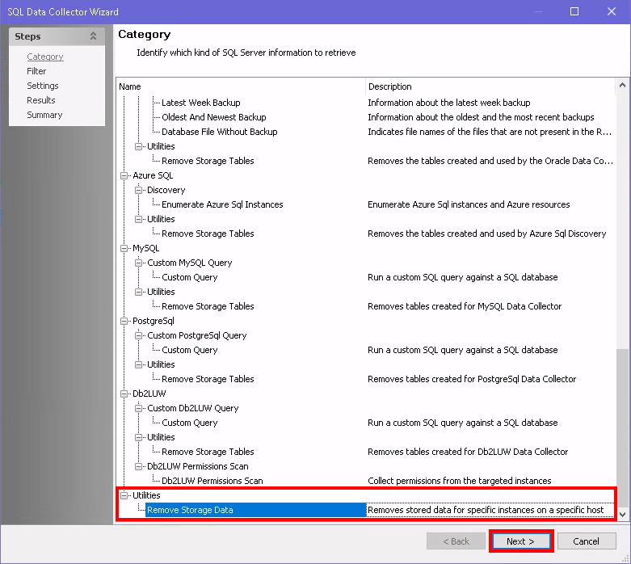
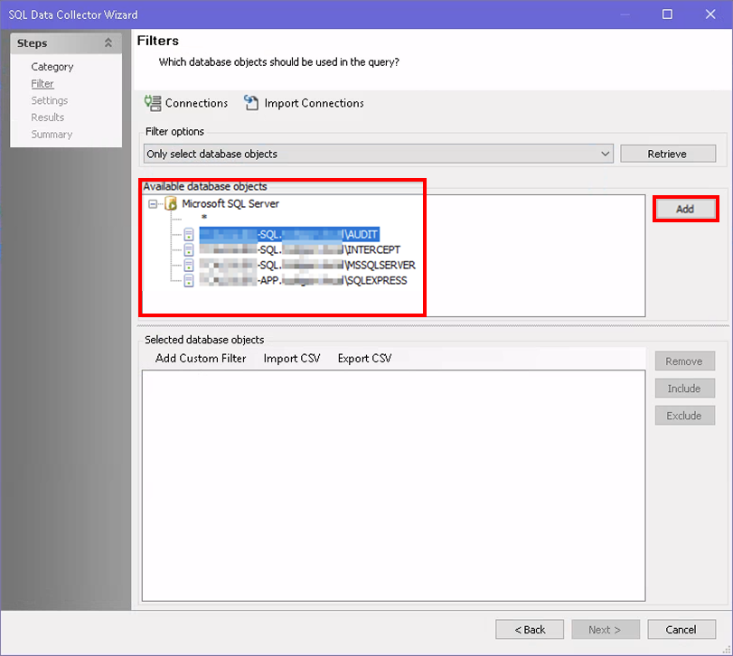

Overview
This article explains how to drop data collected from SQL Servers using the Databases Module. Follow the instructions below to drop data for all SQL Servers or for specific hosts/instances.
Instructions
Drop All Data for SQL Servers
NOTE: You can create a separate folder (e.g., Sandbox) for custom jobs.
-
Right-click the custom or Jobs folder and select
Create Job Ctrl+Alt+A.

-
Navigate to the Configure node of the NewJob and select the
Queries node.

-
Click the Create Query button.

- In the General tab, designate a clear Name and Description (e.g., DropSQLHostData).
-
In the Data Source tab, select SQL from the
Data Collector dropdown menu.

-
Click Configure to launch the SQL Data Collector Configuration
Wizard.

-
On the Wizard Category page, select the
Utilities > Remove Storage Tables option under the appropriate
database type and click Next to drop all collected SQL data for SQL
Servers.

- To complete the query, ensure you have selected the desired Available Properties, click Next, and then Finish. Last, click OK.
-
To run the job, you can either select Run now from the job windowpane
or right-click the job and select Run Job.

Drop Data for Specific Hosts/Instances for SQL Servers or Drop Specific Data for SQL Hosts/Instances
- Follow steps 1–6 detailed above.
-
On the SQL Data Collector Configuration Wizard Category page, select the Utilities > Remove Storage Data
option and click Next.
-
On the Filters page, select the databases/instances via the
Filter Options drop-down menu:
- All database objects
-
Only select database objects
-
When using this option, select the database objects you want to delete in the
Available database objects pane, then click
Add.

-
When using this option, select the database objects you want to delete in the
Available database objects pane, then click
Add.
-
On the Settings page, select the type of data you would like to remove for your
specified hosts:
- Permissions
- Audits
- Sensitive Data
- Orphaned Rows
- On the Results page, enable all of the available properties.
- Run the job.